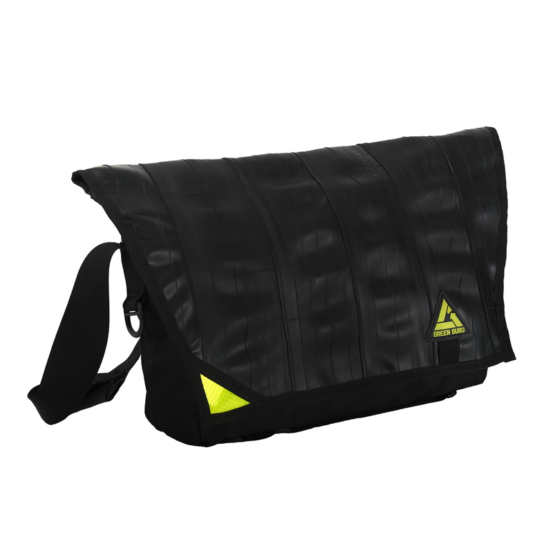
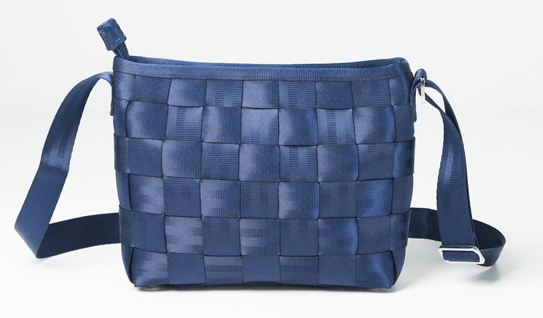
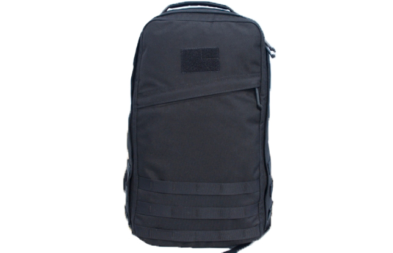
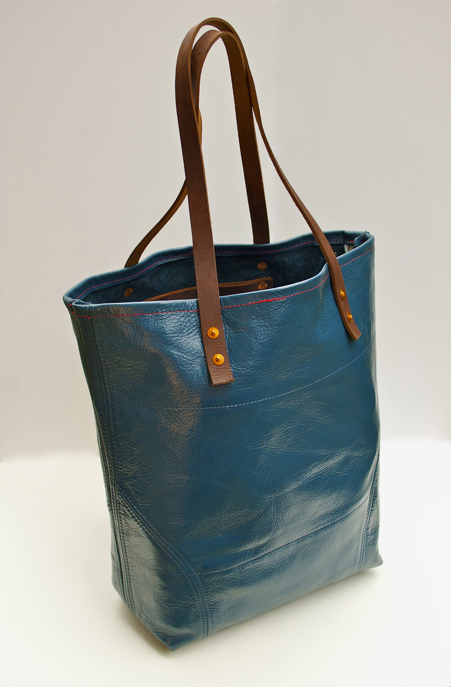
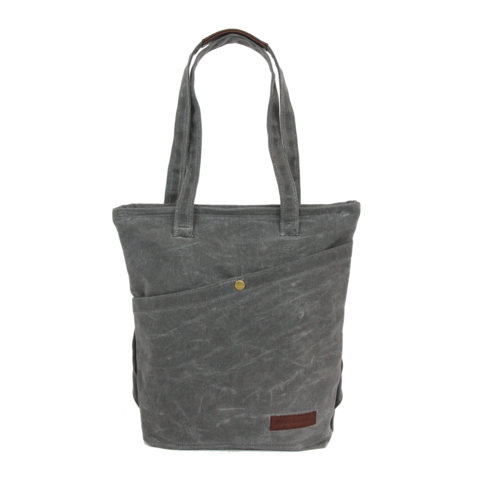

by Green Guru
Light and durable. Weatherproof. Adjustable shoulder strap. Front zipper pockets and organizer. Made from recycled fabrics and upcycled bicycle inner tubes. PVC vinyl interior liner. Nylon and metal hardware.
Made in Colorado
Discovered by Madalyn Terry in the winter of 2014.
Freewheeler Messenger 12'' × 17''; ~4.8 gallons G1204
Direct $99.95
by Harvey’s
Hand woven recycled seat belts. Cross body strap. Zip top. Inner zip pocket and slip pockets.
Made in California
Discovered by Madalyn Terry in the fall of 2014.
Little Messenger 7.5'' × 9'' × 2.5''
Direct $98
by GORUCK
Special Forces-grade materials. Highly water-resistant. Padded shoulder straps. Separate, bombproof compartment for laptop or hydration bladder. Lifetime guarantee.
Made in Montana
Discovered by Max Terry in the summer of 2014.
Original 6.9 gallons GR1
Direct $295
by Skyebags
Leather straps. Large pocket within main compartment. Copper rivets. Primarily made of repurposed aircraft leather donated by Delta Air Lines. 10% of Skyebags’ profit helps to support nonprofit organizations such as The Nature Conservancy.
Made in North Carolina
Discovered by Madalyn Terry in the winter of 2014.
Kitty Hawk Tote 17'' × 14''; ~3.5 gallons
Direct $118
Doubles as a backpack. Heavy waxed cotton canvas. YKK zipper closure. Leather handle. Purchases support student scholarships.
Made in California
Discovered by Madalyn Terry in the fall of 2014.
Waxed Stone with Leather 15'' × 13½''; 2.9 gallons
Direct $66.75